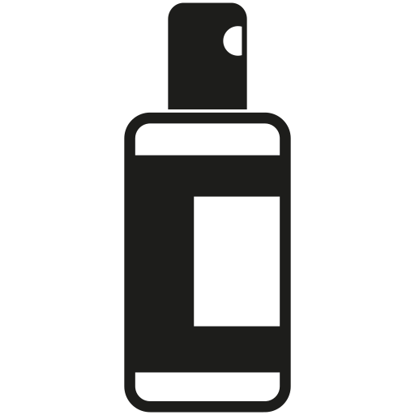

Wysokie
Wysokie
 Bardzo szybko
Bardzo szybko
 Średnia
Średnia
| Day | |||||||
|---|---|---|---|---|---|---|---|
 | |||||||
|  |
Liście roślinny przypominają serduszka Roślina zwisa w naturalny sposób, rośnie w bardzo szybkim tempie. Pod koniec lata pojawiają się na niej egzotyczne kwiaty. Za to w okresie letni pojawić się mogą bulwy służące do rozmnażania rośliny. Roślina bardzo lubi słońce, brak odpowiedniej ilości będzie komunikować utrata swojej różowej barwy. Roślinę należy podlewać dopiero gdy wierzchnia warstwa zupełnie przeschnie. Gdy będzie miała za mało wody zwinie oraz zmarszczy liście.